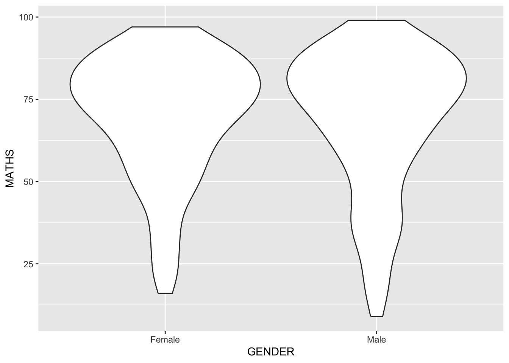
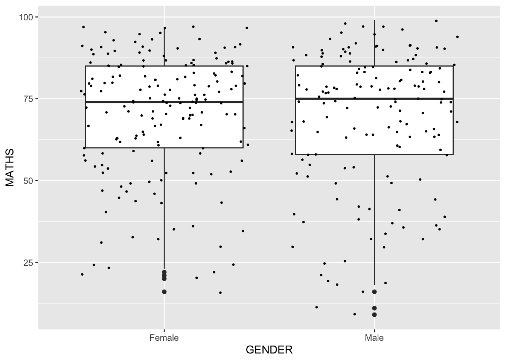

pacman::p_load(tidyverse)Hands-on Exercise 1
Note
Note: Contents of this page are referenced from: instructor’s materials
Getting Started
Install and launching R packages
The code chunk below uses p_load function of pacman package to check if tidyverse packages have been installed in the computer. If they are, then they will be launched into R environment.
Importing the data
The code below imports Exam_data.csv into R environment by using read_csv() function in the readr tidyverse package.
exam_data <- read_csv("data/Exam_data.csv")Rows: 322 Columns: 7
── Column specification ────────────────────────────────────────────────────────
Delimiter: ","
chr (4): ID, CLASS, GENDER, RACE
dbl (3): ENGLISH, MATHS, SCIENCE
ℹ Use `spec()` to retrieve the full column specification for this data.
ℹ Specify the column types or set `show_col_types = FALSE` to quiet this message.Data contains year end examination grades of a cohort of primary 3 students from a local school.
There are a total of seven attributes.
chrstands for categorical data (four of them, namely, ID, CLASS, GENDER and RACE).dblrefers to continuous attributes: ENGLISH, MATHS and SCIENCE.
Plotting a simple bar chart
ggplot2 is an R package for declaratively creating data-driven graphics based on The Grammar of Graphics
It is also part of the tidiverse family specially designed for visual exploration and communication.
Let us first compare how R Graphics, the core graphical functions of base R, and ggplot can be used to plot a simple histogram.
R Graphics
hist(exam_data$MATHS)ggplot2
ggplot(data=exam_data, aes(x = MATHS)) +
geom_histogram(bins=10,
boundary = 100,
color="black",
fill="grey") +
ggtitle("Distribution of Maths scores")Although ggplot2 requires a longer code chunk, Hadley Wickham suggests it is easier to customize the plot according to the visualization needs compared to R Graphics.
Grammar of Graphics
Grammar of Graphics is a general scheme for data visualization which breaks up graphs into semantic components such as scales and layers. It was introduced by Leland Wilkinson (1999) Grammar of Graphics, Springer. The grammar of graphics is an answer to a question:
What is a statistical graphic?
In the nutshell, Grammar of Graphics defines the rules of structuring mathematical and aesthetic elements into a meaningful graph.
There are two principles in Grammar of Graphics, they are:
Graphics = distinct layers of grammatical elements
Meaningful plots through aesthetic mapping
A good grammar of graphics will allow us to gain insight into the composition of complicated graphics, and reveal unexpected connections between seemingly different graphics (Cox 1978). It also provides a strong foundation for understanding a diverse range of graphics. Furthermore, it may also help guide us on what a well-formed or correct graphic looks like, but there will still be many grammatically correct but nonsensical graphics.
A Layered Grammar of Graphics
A short description of each building block are as follows:
Data: The dataset being plotted.
Aesthetics take attributes of the data and use them to influence visual characteristics, such as position, colours, size, shape, or transparency.
Geometrics: The visual elements used for our data, such as point, bar or line.
Facets split the data into subsets to create multiple variations of the same graph (paneling, multiple plots).
Statistics, statiscal transformations that summarise data (e.g. mean, confidence intervals).
Coordinate systems define the plane on which data are mapped on the graphic.
Themes modify all non-data components of a plot, such as main title, sub-title, y-aixs title, or legend background.
Essential Grammatical elements in ggplot2:
ggplot(data=exam_data)
Note
- A blank canvas appears.
ggplot()initializes a ggplot object.- The data argument defines the dataset to be used for plotting.
- If the dataset is not already a data.frame, it will be converted to one by
fortify().
Aesthetic mappings allow the use of visual characteristics to encode an aspect of the data so as to convey information.
All aesthetics of a plot are specified in the aes() function call (in later part of this lesson, you will see that each geom layer can have its own aes specification)
Code chunk below adds aesthetic element into the plot to include the x-axis and the axis’s label.
ggplot(data=exam_data,
aes(x= MATHS))
Geometric objects are the actual marks we put on a plot. Examples include:
geom_point for drawing individual points (e.g., a scatter plot)
geom_line for drawing lines (e.g., for a line charts)
geom_smooth for drawing smoothed lines (e.g., for simple trends or approximations)
geom_bar, geom_col for drawing bars (e.g., for bar charts)
geom_histogram for drawing binned values (e.g. a histogram)
geom_polygon for drawing arbitrary shapes
geom_map for drawing polygons in the shape of a map! (You can access the data to use for these maps by using the map_data() function).
geom_boxplot: for drawing boxplots
geom_density: for distribution frequency
… (For complete list, please refer to here)
A plot must have at least one geom; there is no upper limit. You can add a geom to a plot using the + operator.
The code chunk below plots a bar chart using geom_bar().
ggplot(data=exam_data, aes (x=RACE)) + geom_bar() + geom_dotplot(dotsize = 0.5)Bin width defaults to 1/30 of the range of the data. Pick better value with
`binwidth`.In a dot plot, the width of a dot corresponds to the bin width (or maximum width, depending on the binning algorithm), and dots are stacked, with each dot representing one observation.
In the code chunk below, geom_dotplot() of ggplot2 is used to plot a dot plot.
ggplot(data=exam_data,
aes(x = MATHS)) +
geom_dotplot(dotsize = 0.5)Bin width defaults to 1/30 of the range of the data. Pick better value with
`binwidth`.
The y-scale is not very useful, in fact it is rather misleading.
Note
The code below is used to perform two steps: - scale_y_continuous() is used to turn off the y-axis, and binwidth argument is used to change the binwidth to 2.5.
ggplot(data=exam_data,
aes(x = MATHS)) +
geom_dotplot(binwidth=2.5,
dotsize = 0.5) +
scale_y_continuous(NULL,
breaks = NULL)
In the code chunk below, *geom_histogram()* is used to create a simple histogram by using values in MATHS field of exam_data.
Note that the default bin is 30.
ggplot(data=exam_data,
aes(x=MATHS)) + geom_histogram()`stat_bin()` using `bins = 30`. Pick better value with `binwidth`.
geom-density() computes and plots kernel density estimate, which is a smoothed version of the histogram.
It is a useful alternative to the histogram for continuous data that comes from an underlying smooth distribution.
The code below plots the distribution of Maths scores in a kernel density estimate plot.
ggplot(data=exam_data,
aes(x = MATHS)) +
geom_density() 
The code chunk below plots two kernel density lines by using colour or fill arguments of aes()
ggplot(data=exam_data,
aes(x = MATHS,
colour = GENDER)) +
geom_density()
geom_boxplot() displays continuous value list. It visualises five summary statistics (the median, two hinges and two whiskers), and all “outlying” points individually.
The code chunk below plots boxplots by using geom_boxplot().
ggplot(data=exam_data,
aes(y = MATHS,
x= GENDER)) +
geom_boxplot() 
Notches are used in box plots to help visually assess whether the medians of distributions differ. If the notches do not overlap, this is evidence that the medians are different.
The code chunk below plots the distribution of Maths scores by gender in notched plot instead of boxplot.
ggplot(data=exam_data,
aes(y = MATHS,
x= GENDER)) +
geom_boxplot(notch=TRUE)
geom_violin is designed for creating violin plot. Violin plots are a way of comparing multiple data distributions. With ordinary density curves, it is difficult to compare more than just a few distributions because the lines visually interfere with each other. With a violin plot, it’s easier to compare several distributions since they’re placed side by side.
The code below plot the distribution of Maths score by gender in violin plot.
ggplot(data=exam_data,
aes(y = MATHS,
x= GENDER)) +
geom_violin()
geom_point() is especially useful for creating scatterplot.
The code chunk below plots a scatterplot showing the Maths and English grades of pupils by using geom_point().
ggplot(data=exam_data,
aes(x= MATHS,
y=ENGLISH)) +
geom_point() 
The code chunk below plots the data points on the boxplots by using both geom_boxplot() and geom_point().
ggplot(data=exam_data,
aes(y = MATHS,
x= GENDER)) +
geom_boxplot() +
geom_point(position="jitter",
size = 0.5) 
In the code chunk below,
bins argument is used to change the number of bins to 20, fill argument is used to shade the histogram with light blue color, and color argument is used to change the outline colour of the bars in black
ggplot(data=exam_data,
aes(x=MATHS)) +
geom_histogram(bins=20,
color="black",
fill="light blue")
The code below changes the interior colour of the histogram (i.e. fill) by changing a sub-group of aesthetic().
grey40 sets the bar borders to a lighter shade of grey
ggplot(data=exam_data,
aes(x=MATHS,
fill=GENDER)) + geom_histogram(bins=20, color="grey40")
Note
This approach can be appllied to colour, fill and alpha of the geometric
Analyzing the data
ggplot(data=exam_data,
aes(x= MATHS)) +
facet_wrap(~ CLASS)Using Quarto to show/hide code and output
#| eval: true
#| echo: false
sample = 123